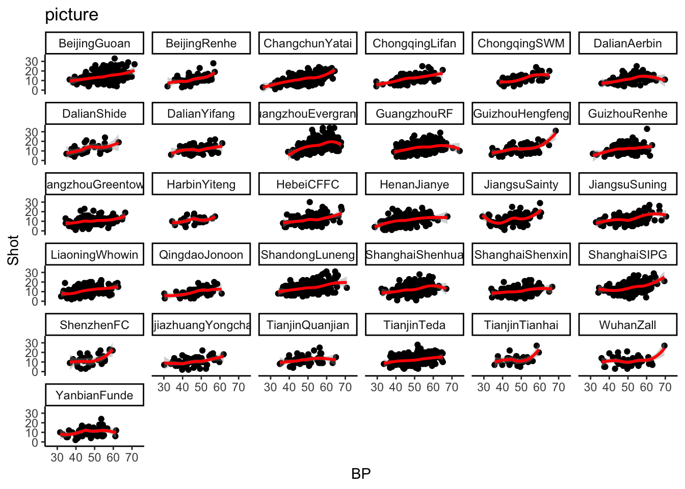

作者简介
上不了厅堂，下得了厨房。敲得了代码，逮得住蟑螂。
#导入包
library(pacman)
p_load(reader,
readxl,
openxlsx,
tidyverse,
dplyr,
tidyr,
ggplot2,
ggthemes,
ggsci,
ggprism,
patchwork
)#读取数据
## 'data.frame': 3798 obs. of 43 variables:
## $ MatchID : chr "41188.5vs3" "41188.5vs3" "40986.5vs14" "40986.5vs14" ...
## $ MatchDate : num 41188 41188 40986 40986 41076 ...
## $ Season : num 2012 2012 2012 2012 2012 ...
## $ Month : num 10 10 3 3 6 6 9 9 6 6 ...
## $ Phase : num 10 10 3 3 6 6 9 9 6 6 ...
## $ Location : chr "Home" "AWAY" "Home" "AWAY" ...
## $ TeamRank : num 5 3 5 14 5 7 5 1 5 11 ...
## $ Team : chr "DalianAerbin" "BeijingGuoan" "DalianAerbin" "DalianShide" ...
## $ OppRank : num 3 5 14 5 7 5 1 5 11 5 ...
## $ Opposition : chr "BeijingGuoan" "DalianAerbin" "DalianShide" "DalianAerbin" ...
## $ BP : num 49 51 54 46 58 ...
## $ GoalScored : num 3 1 3 3 2 1 0 0 1 1 ...
## $ GoalAgainst : num 1 3 3 3 1 2 0 0 1 1 ...
## $ Result : num 3 0 1 1 3 0 1 1 1 1 ...
## $ ResultR : num 0 3 1 1 0 3 1 1 1 1 ...
## $ Foul : num 20 20 18 16 20 15 19 20 22 11 ...
## $ Corner : num 1 3 11 3 4 3 4 3 2 4 ...
## $ Offside : num 3 4 0 5 1 0 3 1 3 2 ...
## $ YellowCard : num 3 3 0 2 2 3 1 2 2 3 ...
## $ RedCard : num 0 0 0 0 0 1 0 0 0 0 ...
## $ Shot : num 13 13 16 9 18 7 6 13 13 12 ...
## $ ShotAcc : num 61.5 38.5 43.8 33.3 44.4 ...
## $ Pass : num 437 510 464 394 478 331 414 577 512 357 ...
## $ PassAcc : num 65.2 70.6 62.1 54.1 72 ...
## $ FwdPass : num 322 342 333 303 317 234 286 394 363 257 ...
## $ FwdPassAcc : num 59.6 62 57.1 48.2 63.4 ...
## $ Cross : num 8 20 33 18 15 11 14 18 18 17 ...
## $ CrossAcc : num 25 15 27.3 16.7 13.3 ...
## $ GroundDuel : num 57 59 42 42 27 27 41 41 26 26 ...
## $ GroundDuelWon: num 50.9 49.1 50 50 59.3 ...
## $ AirDuel : num 31 31 64 64 38 38 46 46 34 34 ...
## $ AirDuelWon : num 64.5 35.5 51.6 48.4 47.4 ...
## $ Tackle : num 13 25 19 28 25 22 14 18 13 20 ...
## $ TackleWon : num 53.9 44 73.7 57.1 64 ...
## $ TD : num 107351 105927 117324 112010 102903 ...
## $ SprintE : num 61.6 64.9 88 82.5 71.5 73.7 53.9 80.3 69.3 79.2 ...
## $ SprintD : num 1231 1202 1571 1522 1637 ...
## $ HSRE : num 354 348 490 387 343 ...
## $ HSRD : num 4950 4865 7203 6044 5573 ...
## $ HIRE : num 416 412 578 470 414 ...
## $ HIRD : num 6181 6068 8774 7567 7208 ...
## $ MSRD : num 14479 14866 18417 16255 12714 ...
## $ LSRD : num 86691 84993 90133 88188 82980 ... ggplot(data=lm)+
aes(x=BP,y=Shot)+
geom_point()+
facet_wrap(~Team)+
stat_smooth(method = 'loess', color = 'red')+
#coord_fixed()+
#scale_color_nejm() +
theme_classic() +
labs(title = "picture")## `geom_smooth()` using formula 'y ~ x'